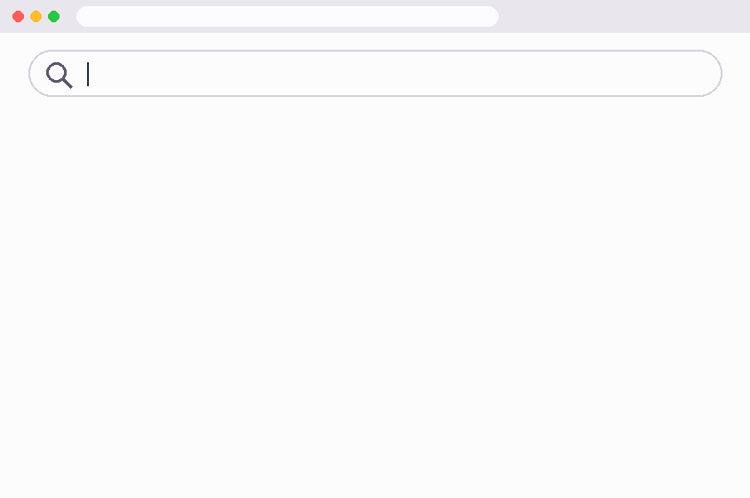
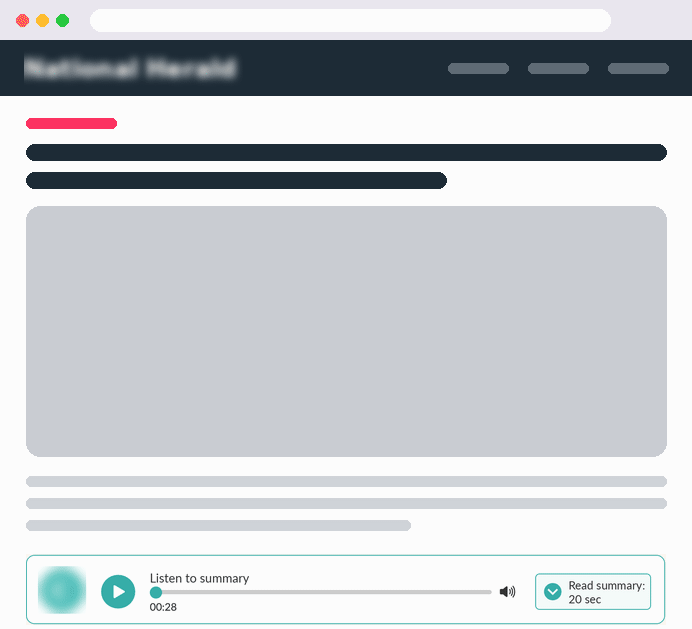
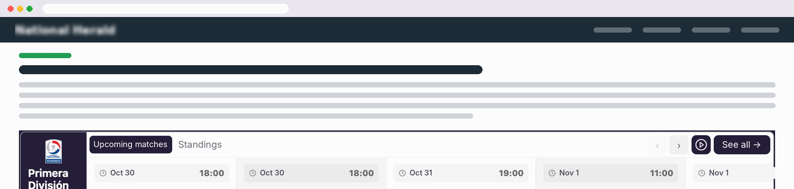
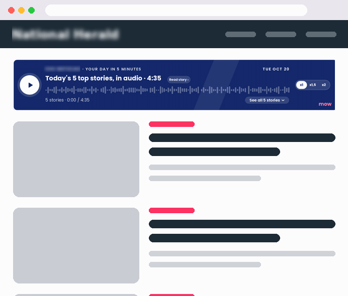
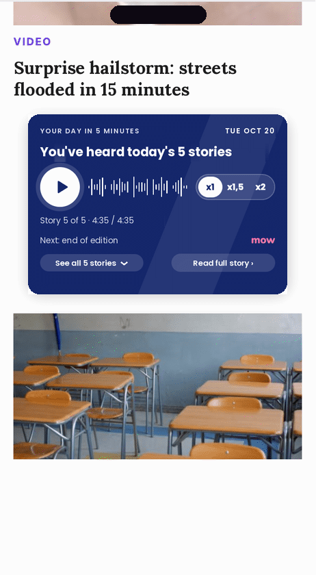

Solutions for publishers
Monetize every visit better
More value for your audience. New revenue opportunities.
Zero-click: AI answers right on the search page, and users no longer visit your site.
−47%
fewer clicks when an AI summary appears
−33%
organic traffic from Google

Only 1 in 100 visits with an AI summary ended in a click to its sources. Sources: Pew Research Center, 2025 (−47% and 1 in 100) and Chartbeat via Reuters Institute (−33%, 2,500+ sites, Nov 2024 to Nov 2025).
Summary text/audio
Turn your articles into new content experiences
AI-generated summaries in text, audio or both.
Audio Summary
Lets users consume content while they browse or do other things.
Expands access to information beyond traditional reading.
Text Summary
Enables fast, efficient reading.
Highlights the key ideas so readers spot relevant content quickly.
Value for the publisher
Higher engagement: a more accessible experience.
Longer sessions: more time on your site.
New revenue: integrated audio and display ads.

More ways to consume content, with no extra editorial work.
Live Data Widget
Relevant, real-time information, right on your site

Verticals
Sports
Weather
Finance
Lottery
Horoscope
Games
Value for the publisher
Higher engagement
Live data that gives readers reasons to come back.
Personalized experience
Tailored to each site.
Incremental monetization
Integrated advertising.
The right content, for the right audience, in the right place.
MOW Brief
Your daily briefing, in your own voice
5
of today's
top stories
1
short
brief
up to date
in minutes
Want to go deeper on a story? Each summary links to the original article, driving new traffic to your content.
Value for the publisher
Access to what matters
Makes the most important news easy to reach.
Time-pressed readers
A better experience for them.
More discovery
Promotes more of the outlet's content.
New revenue
Monetization with integrated ads.

Less time finding what matters. More chances to discover your content.
Receptivity
Ads at the moment users are paying attention
We read behavioral signals in real time and show the ad when the user is actually looking at the screen.
Works with
Summary
Live Data Widget
MOW Brief
Higher viewability
Prioritizes the opportunities where the ad is most likely to be seen.
Better CTRs
Can drive more interaction with ads.
Higher CPM potential
Impressions with stronger attention signals.
More efficiency
Can help improve ad inventory performance.
Real-time signals
% in view
Tab visibility
Scroll speed
Recent interaction
Receptivity detected
The ad is shown →

It's not just about showing ads, it's about showing them when they're most likely to be seen.
Try it, no commitment
See what MOW Player can do on your own site
Every outlet has a different audience, strategy and needs. That's why we offer a no-commitment test to measure how our solutions perform on your site.
1
Together, we pick the right solution for your audience.
2
We run a test to evaluate how it works and performs.
3
We review the results and agree on next steps based on your experience and satisfaction.
No obligation to continue.
Whether to move forward depends on how happy you are with the results.

Mateo Olivera
Sales Director
Programmatic, CTV & DOOH | Live Data Widget | Adops